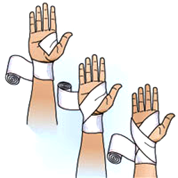
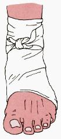
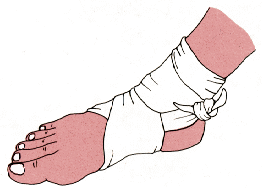
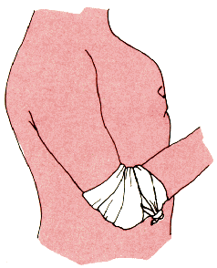
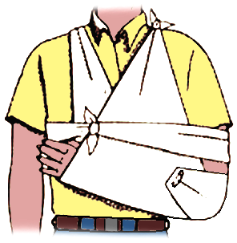
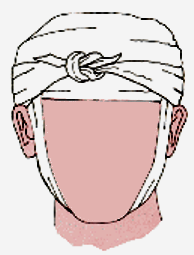
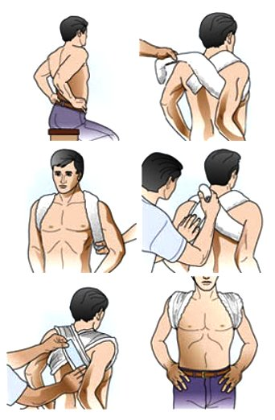

Vendaje
El vendaje se realiza mediante una cinta o rollo de tela u otro material, que se puede enrollar alrededor de una parte del cuerpo de diferentes maneras, para mantener la presión sobre una compresa o inmovilizar un miembro u otra parte del cuerpo.
Recomendaciones para un vendaje
- Realizarlo en articulaciones principales.- Utilizar vendas adecuadas.
- Comprueba la circulación cada 10 minutos.
- Si está demasiado apretado, desenrolla para recuperar el riego sanguíneo y vuelve a ponerlo mas flojo.
Las funciones de los vendajes son
- Fijar gasas o apósitos sobre una herida o quemadura.
- Detener el sangramiento proveniente de una herida.
- Inmovilizar articulaciones lesionadas por: traumatismos, esguinces, luxaciones y fracturas.
- Realizar cabestrillos y fijar entablillados.
Vendaje de mano
1 Pon la punta de la venda por la cara interior de la muñeca, hacia la base del pulgar. Da dos vueltas rectas a la muñeca.
2 Pasa la venda diagonalmente por el dorso de la mano hasta la uña del dedo meñique. Lleva la venda cruzando la base de los dedos de forma que el borde superior toque la uña del dedo índice. Deja libres las yemas de los dedos.
3 Dejando los dedos libres, cruza la venda por el dorso de la mano hasta la parte externa de la muñeca. Enrolla otra vez sobre la muñeca y luego otra diagonal sobre la mano. Repite las secuencias de vueltas en diagonal.
4 Cuando la mano esté cubierta, termina con dos vueltas rectas alrededor de la muñeca y sujeta el extremo.
Vendaje de pie
Pie y tobillo Es un vendaje muy utilizado como tratamiento frente a un esguince o herida en esa zona.
1 Comienza con dos circulares a nivel del tobillo. Es mejor si mantienes enrollada la venda y la vas desenrollando poco a poco mientras realizas el vendaje para evitar que te estorbe. Puedes usar un trozo de gaza o un pañuelo colocándolo al costado del tobillo antes de hacer el vendaje si quieres tener un mayor soporte.
2 Haz el vendaje con forma de 8, sobreponiendo cada vez la mitad de la vuelta anterior. Al terminar este paso el pie debería estar cubriendo la mayor parte del pie y todo el tobillo. .
3 Termina con dos vueltas circulares a la altura del tobillo y la fijación de la venda. Pregúntale a la persona que está siendo vendada como se siente después de que termines de dar las vueltas del vendaje, si siente que está muy apretado empieza de nuevo.
Sólo Pie (Este recibe el nombre de zapatilla) 
1 Inicia en el talón dando dos vueltas circulares siguiendo el reborde del pie.
Al llegar al quinto dedo, dirige la venda hacia abajo por debajo de los dedos para hacerla salir a nivel del primer dedo.
2 A partir de aquí llévala hacia el talón al que rodeas, para dirigirte de nuevo al 5º dedo.
3 De esta forma, ve ascendiendo por el pie a base de vueltas en 8. Termina mediante 2 vueltas circulares a nivel del tobillo.
Vendaje de codo o rodilla
Las vendas en rollo pueden usarse sobre codos y rodillas para sujetar apósitos, o para inmovilizar lesiones como esguinces y torceduras.
1 Sosten el miembro lesionado en una postura cómoda para la víctima, con la articulación ligeramente flexionada, si se puede. Pon la punta la venda por el interior de la articulación. Rodea la articulación completa hasta la cara exterior. Completa vuelta y media, para que la punta o cabo de la venda quede ajustado y la articulación cubierta.
2 Prosigue con cruzados en 8, alternos sobre brazo y antebrazo, o pierna y muslo, dependiendo del caso. Para acabar, haga dos vueltas rectas alrededor del miembro y sujete el extremo del vendaje.
3 Este tipo de vendaje no debe inmovilizar totalmente la articulación. Comprueba la circulación distal (es decir la circulación del miembro luego de donde colocas el vendaje) en cuanto termine, luego cada 10 minutos. Si estuviera demasiado apretado, desenrolla hasta que se recupere el riego sanguíneo y vuelve a ponerlo mas flojo.
Cabestrillo
El propósito de un cabestrillo es inmovilizar y proteger un brazo lesionado. Si bien las fracturas son una razón común para usar un cabestrillo, no hace falta sufrir una para utilizarlo; las contusiones, los esguinces y las luxaciones también pueden requerir el uso de un cabestrillo.
Tu pañoleta es ideal para hacer este vendaje.
1Quita todos los anillos, pulseras y/o brazaletes del brazo lesionado. Si el brazo se hincha, las joyas (especialmente las que se ajustan) pueden restringir el flujo de sangre provocando dolor e irritación, e incluso pueden quedarse atascadas.
2 Coloca el antebrazo de la víctima ligeramente oblicuo, es decir que la mano quede más alta que el codo. Siempre y cuando esto no cause mucho dolor, o empeore la lesión.
2 Ubícate detrás de la víctima y coloca la venda triangular extendida. Lleva el extremo inferior de la venda hacia el hombro del brazo lesionado.
3 Amarra los dos extremos de la venda con un nudo hacia un lado del cuello (del lado del lesionado) NUNCA sobre los huesos de la columna vertebral. Si el nudo le fastidia, desliza una almohadilla o toalla pequeña por debajo de él.
Deja los dedos descubiertos para controlar el color y la temperatura.
Si tienes un imperdible a la mano, une ambos bordes de la tela cerca del codo. Esto crea una “barrera” sobre la que puedes apoyar el codo. Sin esta barrera, el brazo podría salirse por la parte posterior del cabestrillo a medida que se mueve o la tela podría amontonarse cerca de la muñeca.
Vendaje de Cabeza
Sirve para sostener apósitos en heridas y en quemaduras de la cabeza. Para efectuarlo se precisan dos vendas.
1 Toma la venda e inicia dando dos vueltas alrededor de la cabeza, desde la frente al occipucio (la parte posterior del cráneo). Para mantener el vendaje en su lugar recarga la cabeza de tu paciente en tu pecho. Este es el movimiento básico para cubrir cualquier herida.
2 Luego coloca la punta de la otra venda a nivel de la frente y dirígela hacía atrás, siguiendo la línea media del cráneo hasta encontrarse a nivel de la otra venda. Vuelve a efectuar una circular con esta venda de modo que quede aprisionando la punta de la segunda venda, así como la venda que se ha deslizado hacia atrás.
3 De esta forma ve efectuando vueltas recurrentes con la primera venda, que son fijadas mediante vueltas circulares con la segunda. Se termina con dos vueltas circulares.
Vendaje de Clavícula
El propósito de este vendaje consiste en inmovilizar la clavícula lesionada, mientras el pasciente es llevado a un centro asistencial.
1 Reducirla, pidiendo al paciente que lleve los hombros hacia atrás. Esto debe hacerse con el mayor cuidado, para evitar producir mucho dolor o empeorar la lesión.
2 Inmovilizar con un vendaje en ocho. Previamente almohadillar con algodón o similar, toda la zona de vendaje.